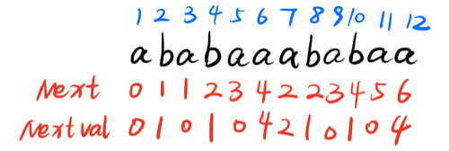

next数组
next[j]=k：k是当模式串中第j个字符与主串中相应字符 “失配”时，在模式串中需重新和主串中该字符进行比较的字符的位置。
\[ \left.{next[j]=}\left\{\begin{array}{ll} \mathbf{0} & \text{当 j=1 时(代表下一趟比较}\mathrm{i=i+1,j=1})\\\\ \mathbf{max\{k\mid1<k<j}\text{且前k - 1个元素和后k-1个元素一致}\}&\text{此集合不为空时,下一趟比较i = i ,j = k}\\\\ \mathbf{1}&\text{其它情況(即$j \ne 1且上述集合为空$)}\end{array}\right.\right. \]
快速填写记法：
（1）字符串从1开始标号；
（2）next[1]默认为0；
（3）next[i] = 前 i -1 位字符串公共前后缀的长度 + 1；
Notice：
前缀：除最后一个字符外，一个字符串的全部头部组合；
后缀：除第一个字符外，一个字符串全部的尾部组合；所以，
"aaa"的公共前缀和长度为2。
void GetNext(const char *T, int *next) {
int j = 1, k = 0; // j 表示模式串位置, k 是前缀长度
next[1] = 0; // 初始化 next 数组
while (j < strlen(T)) {
if (k == 0 || T[j] == T[k]) {
j++;
k++;
next[j] = k; // 更新 next[j]
} else {
k = next[k]; // 回退
}
}
}nextval数组
引入原因：next数组中，前后两个相邻的字母如果相同，在匹配过程中遇到需要回退的情况，可以跳过回退到该字母。
\[ \begin{array}{l} nextval[i] & = 1\\ nextval[i] & = \left\{\begin{array}{ll} nextval[i] = nextval[next[i]] & \text{当$Pattern_i = Pattern_{next[i]}$时}\\\\ nextval[i] = next[i] & \text{当$Pattern_i \ne Pattern_{next[i]}$时}\end{array}\right. \end{array} \]

完整代码
#include <stdio.h>
#include <string.h>
void GetNextVal(const char *T, int *nextval) {
int j = 1, k = 0; // j 表示模式串位置, k 是前缀长度
nextval[1] = 0; // 初始化 nextval 数组
while (j < strlen(T)) {
if (k == 0 || T[j] == T[k]) {
j++;
k++;
if (T[j] != T[k]) {
nextval[j] = k; // 当 T[j] ≠ T[next[j]] 时，直接赋值
} else {
nextval[j] = nextval[k]; // 当 T[j] == T[next[j]] 时，优化跳跃
}
} else {
k = nextval[k]; // 回退
}
}
}
int Index_KMP(const char *S, const char *T, int pos) {
int nextval[100]; // 假设模式串长度不超过 100
GetNextVal(T, nextval); // 生成 nextval 数组
int i = pos; // 主串的当前指针
int j = 1; // 模式串的当前指针
printf("i\tj\n");
while (i <= strlen(S) && j <= strlen(T)) {
printf("%d\t%d\n", i, j); // 输出当前的 i 和 j 值
if (j == 0 || S[i - 1] == T[j - 1]) {
i++;
j++;
} else {
j = nextval[j]; // 模式串向右移动
}
}
if (j > strlen(T)) {
return i - strlen(T); // 匹配成功，返回匹配位置
} else {
return 0; // 匹配失败
}
}
int main() {
const char S[] = "abcaacabcab"; // 主串
const char T[] = "abcab"; // 模式串
printf("主串: %s\n", S);
printf("模式串: %s\n", T);
printf("匹配过程:\n");
int pos = Index_KMP(S, T, 1); // 从第一个字符开始匹配
if (pos > 0) {
printf("匹配成功，位置: %d\n", pos);
} else {
printf("匹配失败\n");
}
return 0;
}